Префектура Симанэ · Идзумо · святилища
Идзумо-тайся: святилище, куда раз в год съезжаются все боги Японии
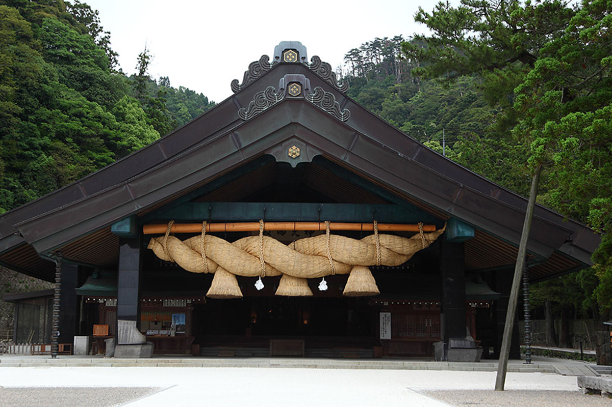
Святилище Идзумо-тайся, по преданию, построили ещё в эпоху богов. Каждую осень сюда, на побережье префектуры Симанэ, собираются все божества страны, и даже обычная молитва здесь звучит иначе, чем в остальной Японии.
Святилище
Дом бога, уступившего землю
Японские мифы рассказывают о временах, когда страной правили боги, и святилище Идзумо-тайся, говорят, появилось именно тогда. С тех пор здесь хранят древние обряды и ремёсла, а в месяц Камиари, десятый месяц по старому календарю, в Идзумо собираются все божества Японии. Древние традиции, мастерство и множество обрядов, которые проводят здесь до сих пор, будто пробуждают в человеке что-то очень давнее, и поэтому святилище притягивает людей во все времена.
Об этом договоре рассказывает «Нихон сёки», японская хроника VIII века. В ней боги неба говорят Окунинуси: «Видимыми делами, которыми ты правил, отныне будет править мой внук, а ты будешь ведать делами богов, делами сокрытыми». С тех пор Окунинуси живёт в Идзумо и правит тем, что не видно глазу.
Обновление
Ремонт раз в 60 лет
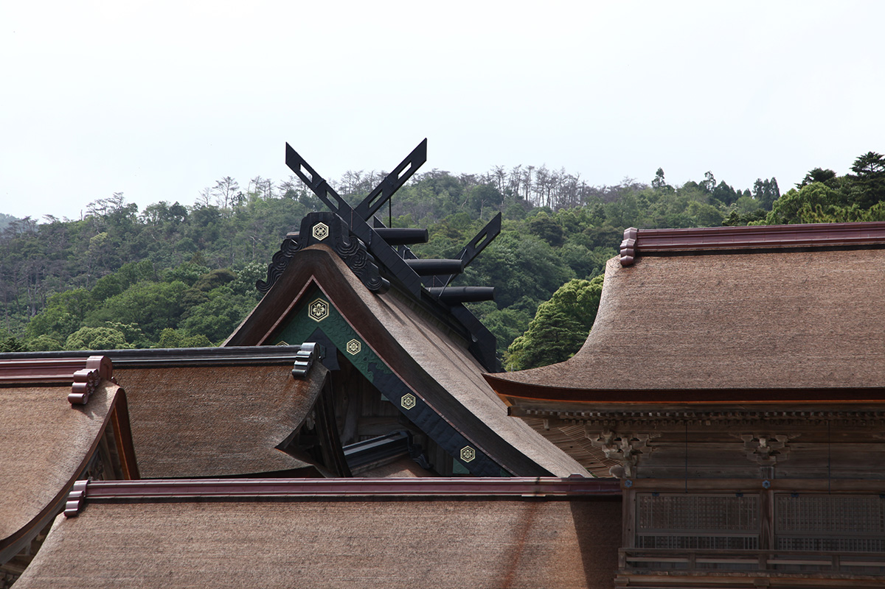
В Японии у крупных святилищ есть обычай сэнгу: время от времени главные постройки обновляют, а божество на этот срок переселяют во временный зал. Обновляют не только здания, но и убранство, утварь и священные сокровища. Для святилища это самый важный обряд из всех.
Последний сэнгу в Идзумо-тайся называют Великим обновлением эпохи Хэйсэй: такого масштаба работ здесь не было 60 лет. Вся программа заняла 11 лет начиная с 2008 года. Главный зал хондэн обновляли около пяти лет: 20 апреля 2008 года Окунинуси торжественно перенесли во временный зал, а 10 мая 2013 года вернули обратно.
«В отличие от святилища Исэ, где здания строят заново, главный зал Идзумо-тайся по сути ремонтируют. Плотники, кузнецы и другие мастера своими руками приводят в порядок всё, что требует починки»
настоятель одного из святилищ Идзумо
Нынешний хондэн построен в 1744 году, и с тех пор его обновляют примерно раз в 60 лет. Работы 2008–2013 годов стали четвёртыми по счёту. Святилище Исэ в префектуре Миэ каждые 20 лет возводит все постройки заново. Идзумо, наоборот, бережёт старое здание и меняет только то, что износилось. Общая стоимость работ составила около 10 млрд иен, больше, чем у любого другого обновления святилищ в стране.
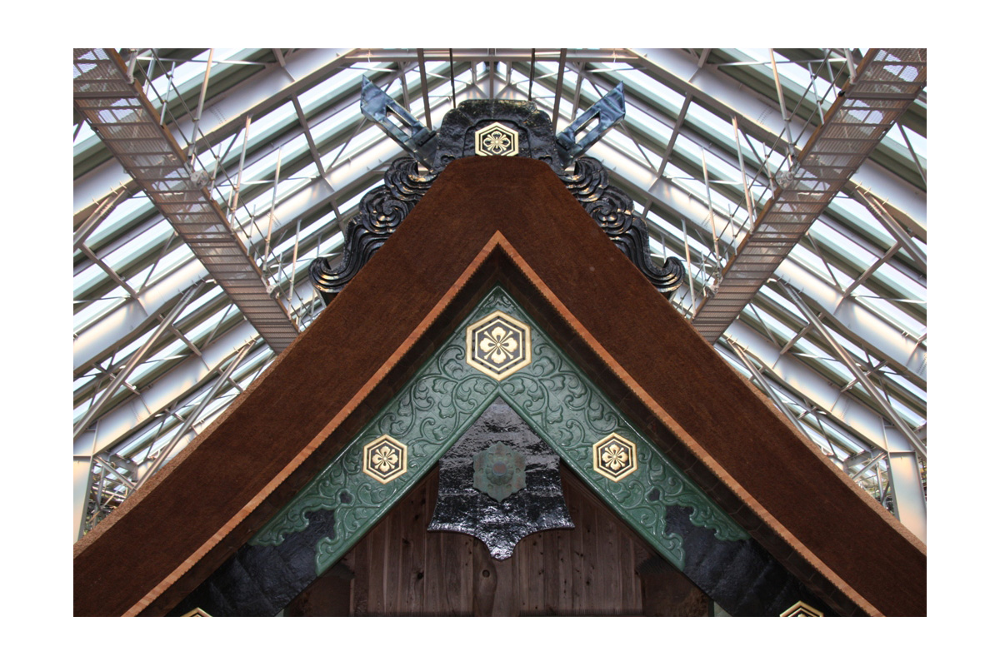
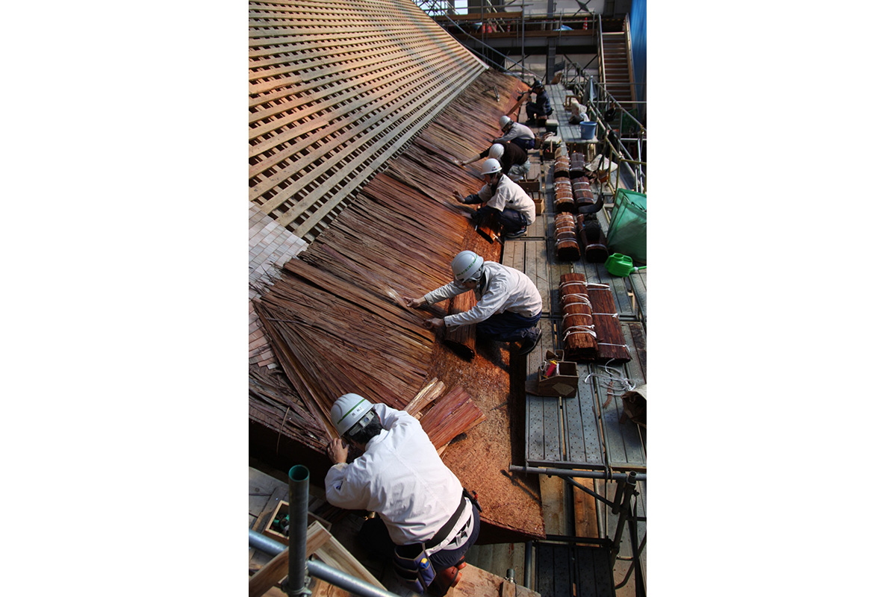
Почему именно 60 лет? Объяснений много. Шестьдесят лет для человека это канрэки, полный круг жизни, и такой срок напоминает о ценности жизни. А сам обряд понимают как возвращение к истокам, благодаря которому святилище остаётся вечно молодым. В прошлый раз Исэ и Идзумо обновлялись одновременно, в 1953 году, и после этого побеждённая в войне Япония начала стремительно расти.
«Мир сейчас меняется очень быстро, и иногда замечаешь, что тебя просто несёт течением. Как раз в такой момент стоит приехать в Идзумо-тайся. Здесь до сих пор повсюду живёт то, что передавали из поколения в поколение с древности. Склонить голову перед невидимым, поблагодарить за то, что живёшь, пусть и недолго: по-моему, это очень важно»
настоятель одного из святилищ Идзумо
Вопросы
Семь вопросов о святилище Идзумо
Зачем построили святилище?
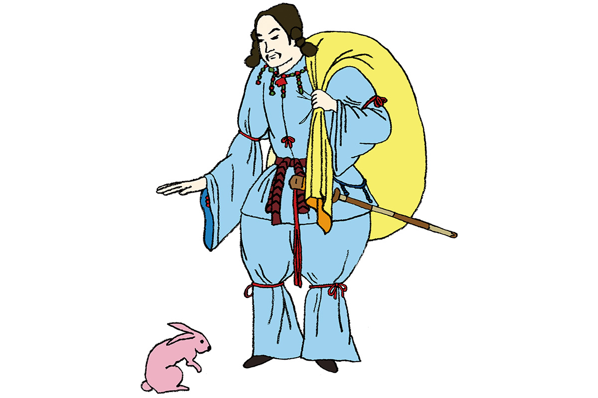
Всё связано с мифом о передаче страны. Боги неба во главе с Аматэрасу потребовали, чтобы Окунинуси уступил им власть над землёй. Он согласился без борьбы, и в благодарность небесные боги построили для него святилище в Идзумо.
Когда оно появилось?
Точной даты нет, предание относит основание ко временам богов. В письменных источниках святилище впервые упоминается в хронике «Нихон сёки» под 659 годом. Скорее всего, с тех пор оно стоит на том же месте.
Почему здесь собираются боги?
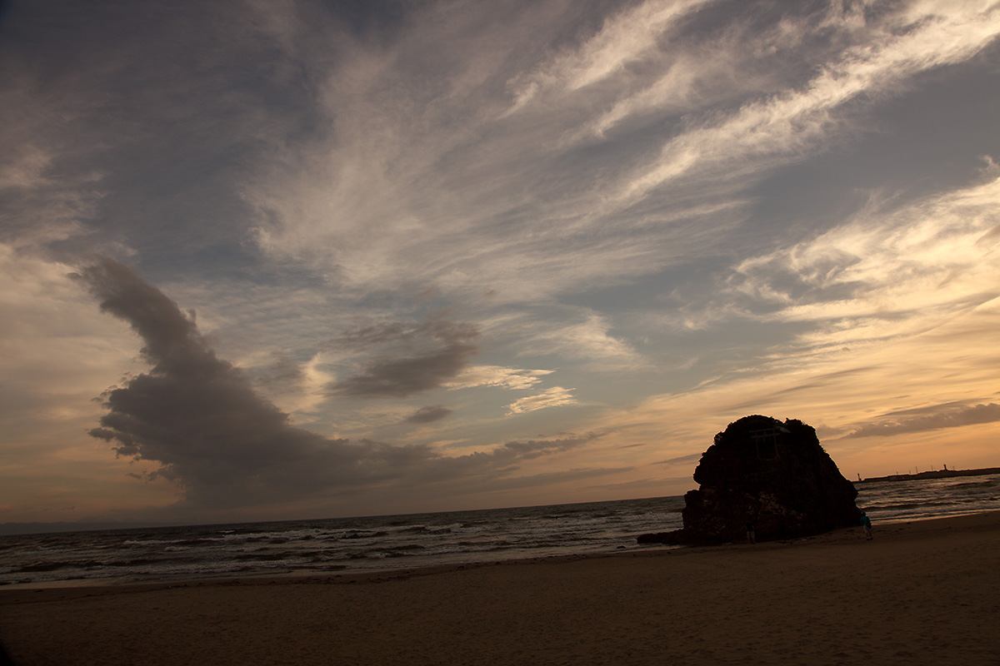
Одно из объяснений снова в мифе о передаче страны. Тогда Аматэрасу поручила Окунинуси править миром богов, и с тех пор все божества раз в год приходят к нему. Поэтому в Идзумо этот месяц называют Камиари, «месяц, когда боги здесь».
Откуда герб святилища?
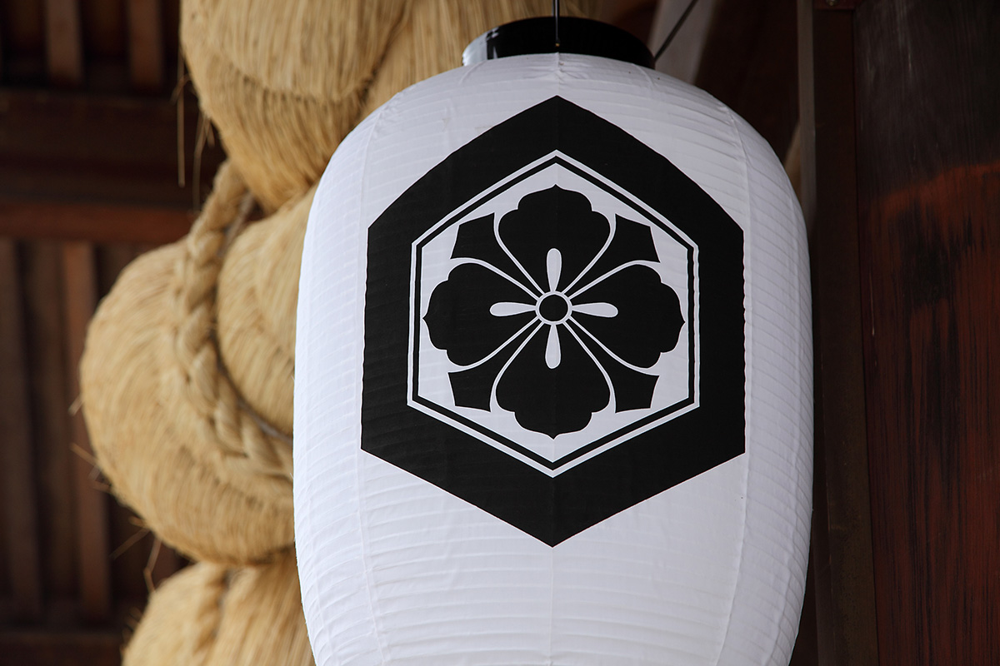
Герб называется «двойной панцирь черепахи с мечом и цветком». Считается, что он изображает три священные регалии японских императоров, а ещё место, где обитает дух божества.
Кто служит в святилище?
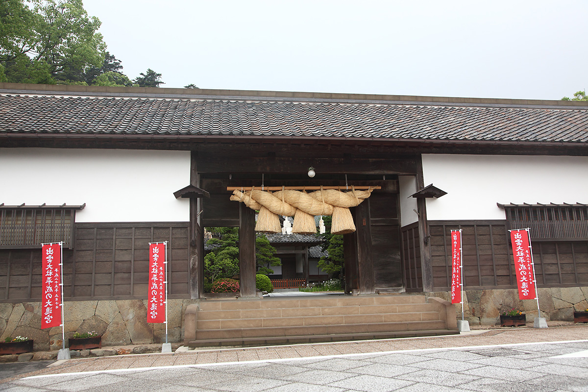
Главный жрец святилища происходит из рода Идзумо-кокусо, потомков древних правителей провинции Идзумо. Род ведёт свою родословную от Амэ-но-Хохи, второго сына богини Аматэрасу.
За что молятся Окунинуси?
Прежде всего за любовь и удачные знакомства. Окунинуси правит невидимым миром, а значит, и невидимыми нитями, которые связывают людей. Есть и другое объяснение: в мифах у самого Окунинуси было много жён-богинь.
Каким ещё богам здесь молятся?
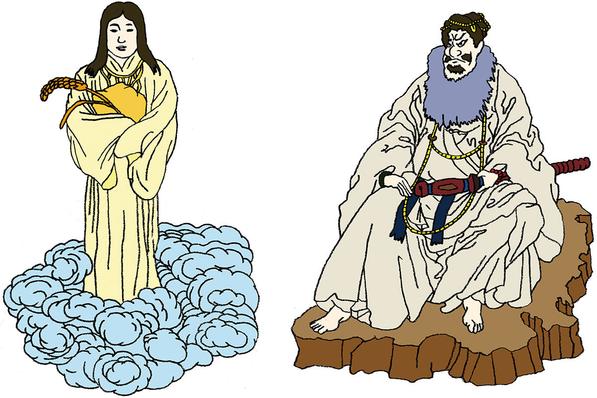
На территории стоят 8 младших святилищ и 3 совсем маленьких. В одних почитают родных Окунинуси: его отца Сусаноо, буйного бога бури, и жену Сусэрихимэ. В других молятся божествам, связанным с ним по мифам.
Молитва
Два поклона, четыре хлопка, один поклон
В большинстве святилищ Японии молятся так: два поклона, два хлопка в ладоши и ещё один поклон. В Идзумо-тайся хлопков четыре. Здесь сохранился старый обычай: в древности хлопали больше, чем сейчас. Так же молятся лишь в считанных святилищах страны, например в святилище Уса на острове Кюсю.
Порядок простой. Встаньте перед залом, дважды глубоко поклонитесь, четыре раза хлопните в ладоши, мысленно поблагодарите бога и попросите о своём, а потом поклонитесь ещё раз.
Маршрут
Как обойти святилище за час
Двигаться по территории лучше в определённом порядке. От главного входа идите к молельному залу, по пути не держитесь середины дорожки и кланяйтесь перед каждыми воротами тории. От молельного зала обходите территорию по часовой стрелке до святилища Сога-но-ясиро, а закончите у павильона с амулетами. Если не торопиться, на маршрут уйдёт около часа.
1. Ворота Сэйдамари
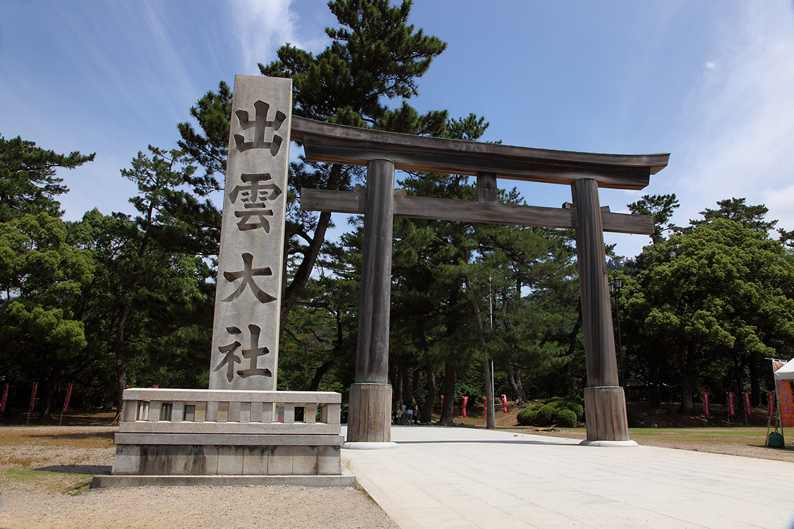
Главный вход в святилище находится на южном краю территории, здесь начинается дорога к залам. Перед воротами тории остановитесь и поклонитесь.
2. Хараэ-но-ясиро
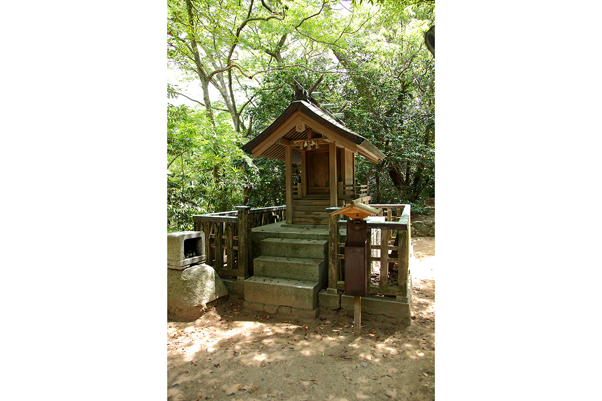
У дороги стоит маленькое святилище, где почитают четырёх богов очищения. Загляните сюда, прежде чем идти дальше: эти боги очищают тело и душу.
3. Дорога вниз
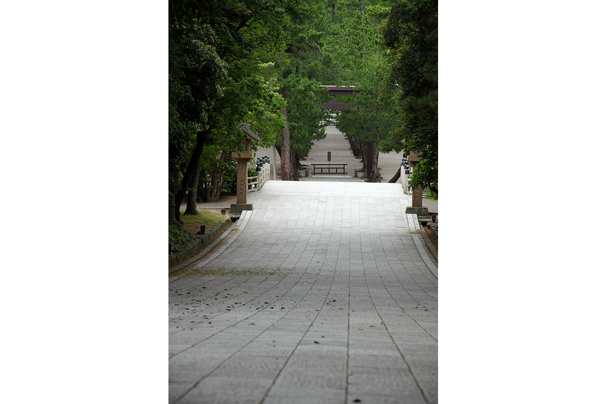
Обычно к святилищу поднимаются, а здесь дорога к главному залу спускается вниз, и это большая редкость. Середина дорожки принадлежит богам, поэтому люди идут по краям.
4. Павильон для омовения
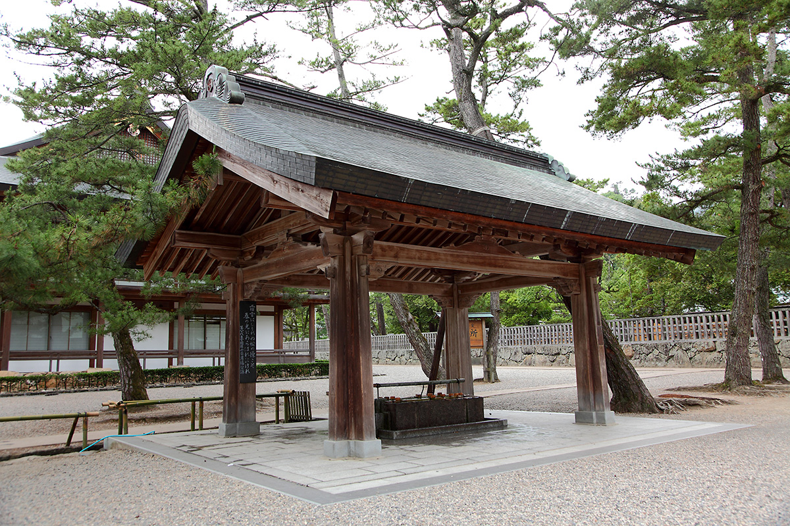
Перед молитвой здесь омывают обе руки и полощут рот. Воду из ковша сначала наливают в ладонь и только потом подносят ко рту.
5. Медные тории
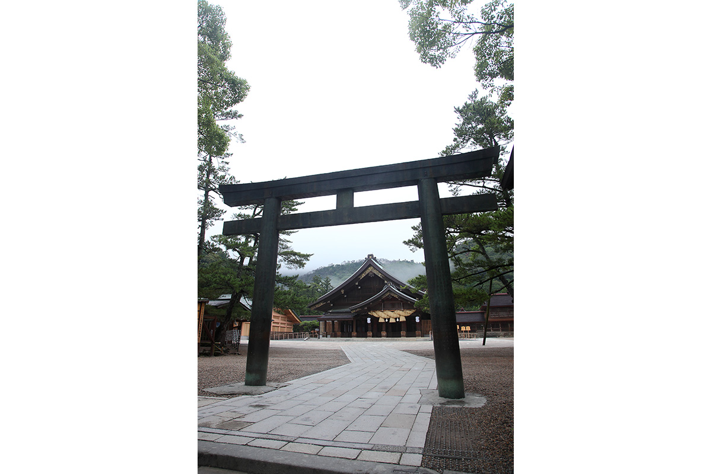
Четвёртые по счёту ворота отмечают вход в главную часть святилища. Эти медные тории считаются старейшими в Японии и охраняются государством как важное культурное достояние.
6. Молельный зал
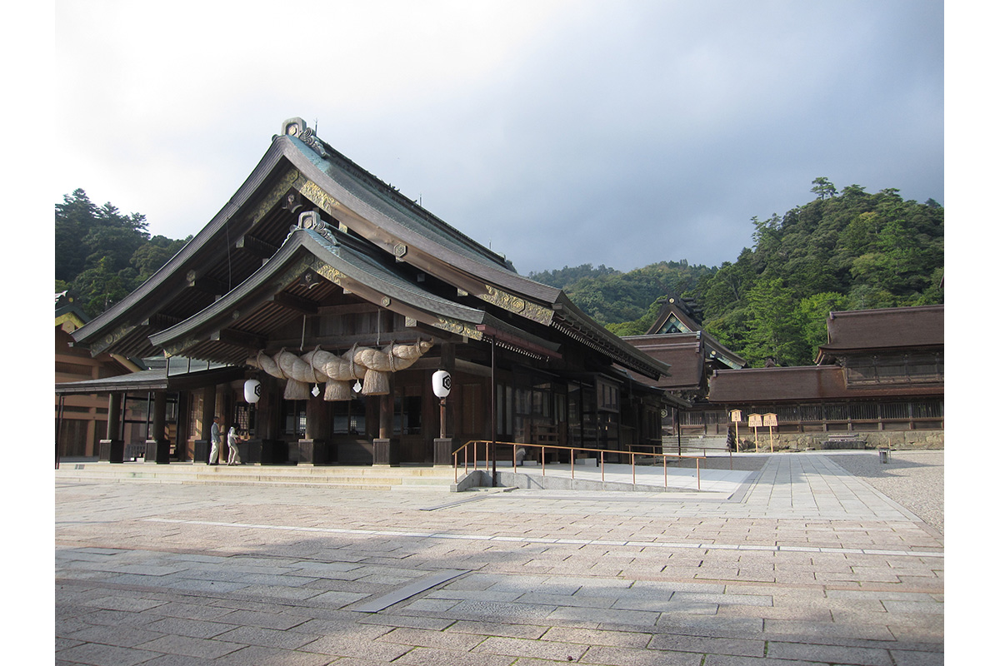
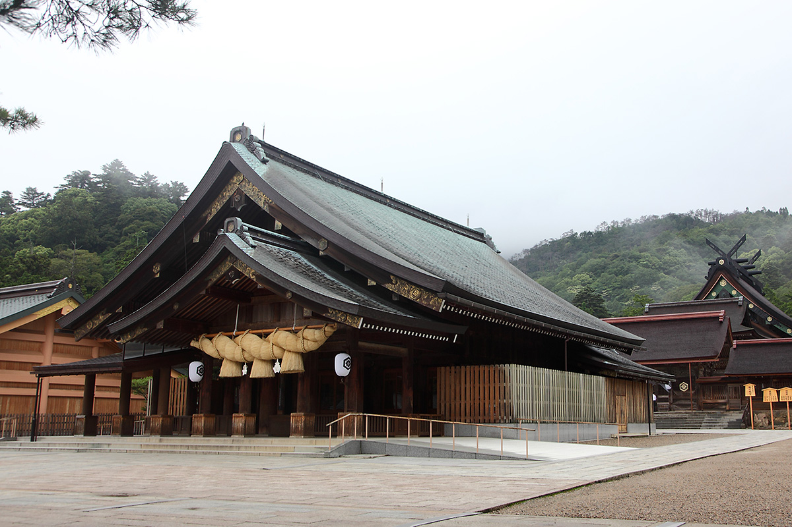
За медными тории открывается молельный зал хайдэн. Сюда приходят поблагодарить бога за каждый прожитый день и попросить о своём. Во время ремонта 2008–2013 годов хайдэн служил временным домом Окунинуси. Нынешнее здание спроектировал в 1959 году Тосио Фукуяма.
7. Сога-но-ясиро
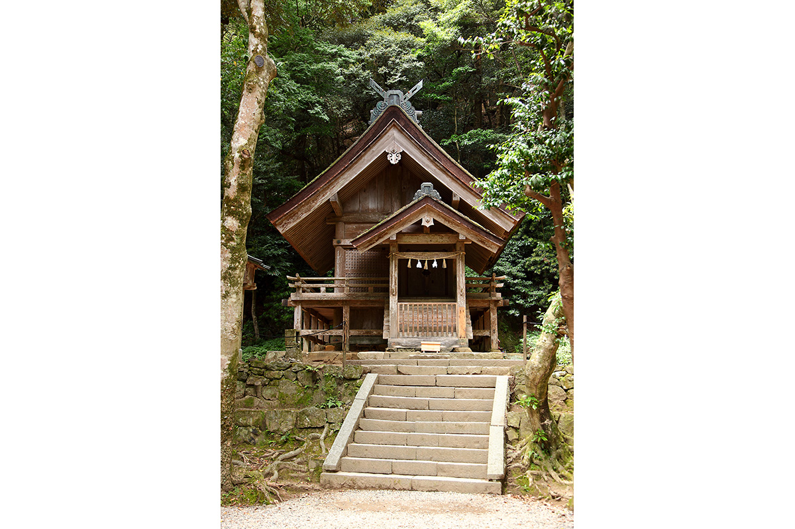
Позади главного зала стоит одно из старейших святилищ на территории. В нём почитают Сусаноо, отца Окунинуси, а местные ласково называют его «Сога-сан».
8. Павильон амулетов
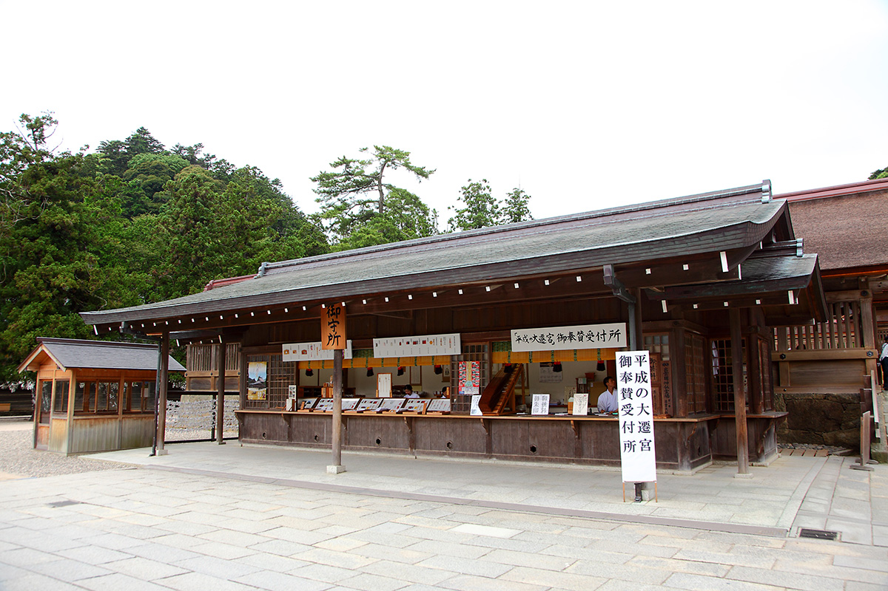
В конце маршрута зайдите в павильон, где продают амулеты. Таких павильонов на территории три.
Постройки
Что посмотреть, кроме главного зала
Кагурадэн и самая большая верёвка в стране
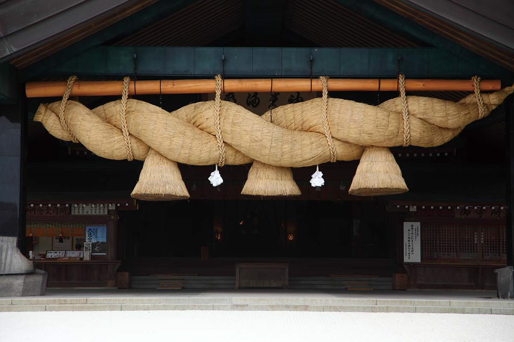
В зале кагурадэн проходят обряды, например встреча богов в месяц Камиари. Знаменит он прежде всего верёвкой симэнава, которая отмечает священное место. Это самая большая симэнава в Японии: длина 13 метров, обхват 8 метров, вес 4,5 тонны. Считается, что её размеры говорят о величии зала и силе самого Окунинуси.
Обратите внимание, как она висит. В других святилищах верёвку начинают свивать справа, а здесь слева, поэтому её называют обратной симэнавой.
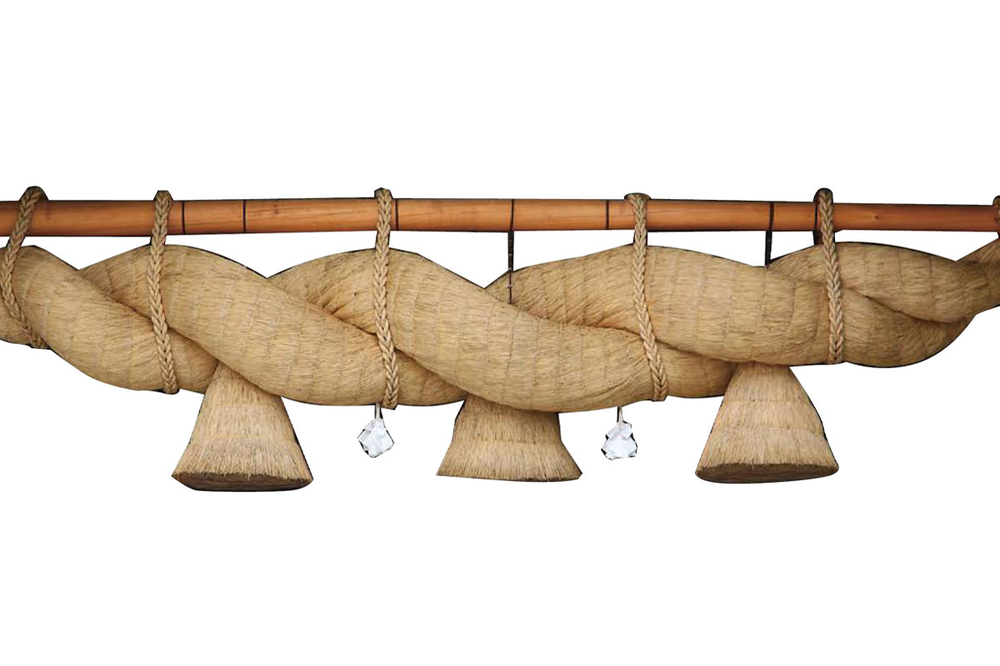
Верёвку сплели жители Иинана, горного городка в префектуре Симанэ, которого в Японии знают как город симэнавы.
Сокровищница
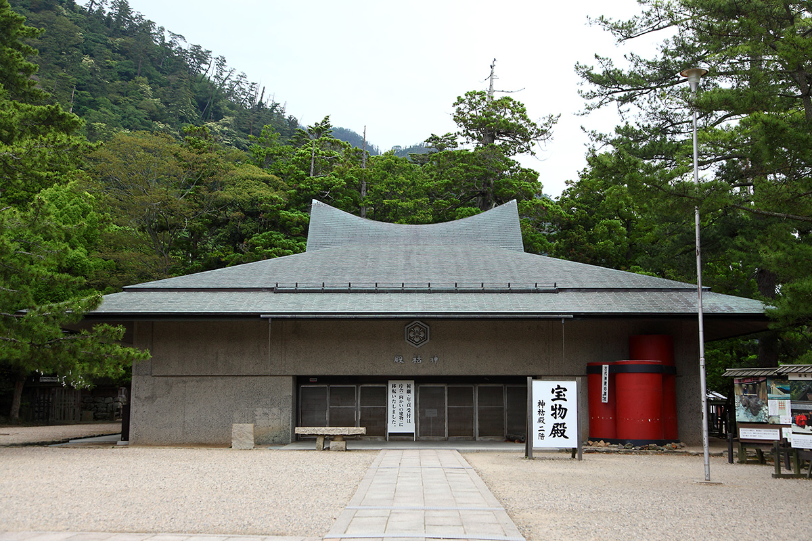
В сокровищнице выставлены реликвии святилища, в том числе огромная колонна древнего главного зала, найденная при раскопках прямо на территории. Здание считается одной из заметных работ японского модернизма, а экспозиция хорошо рассказывает об истории Идзумо-тайся.
Дзюкуся
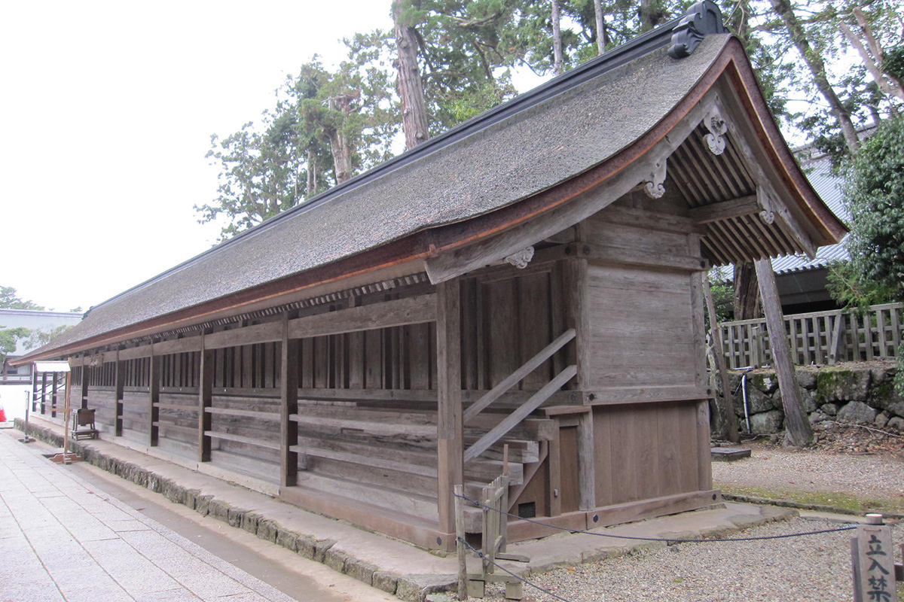
В этой длинной постройке останавливаются боги со всей страны, когда собираются в Идзумо. Все семь дней праздника 19 дверей Дзюкуся стоят открытыми.
Святилище Идзумо-тайся
- Адрес
- префектура Симанэ, Идзумо, Тайся-тё, Кидзуки-Хигаси, 195
- Телефон
- +81 853-53-3100
Фото: Харуо Накано, Таканори Судзуки.